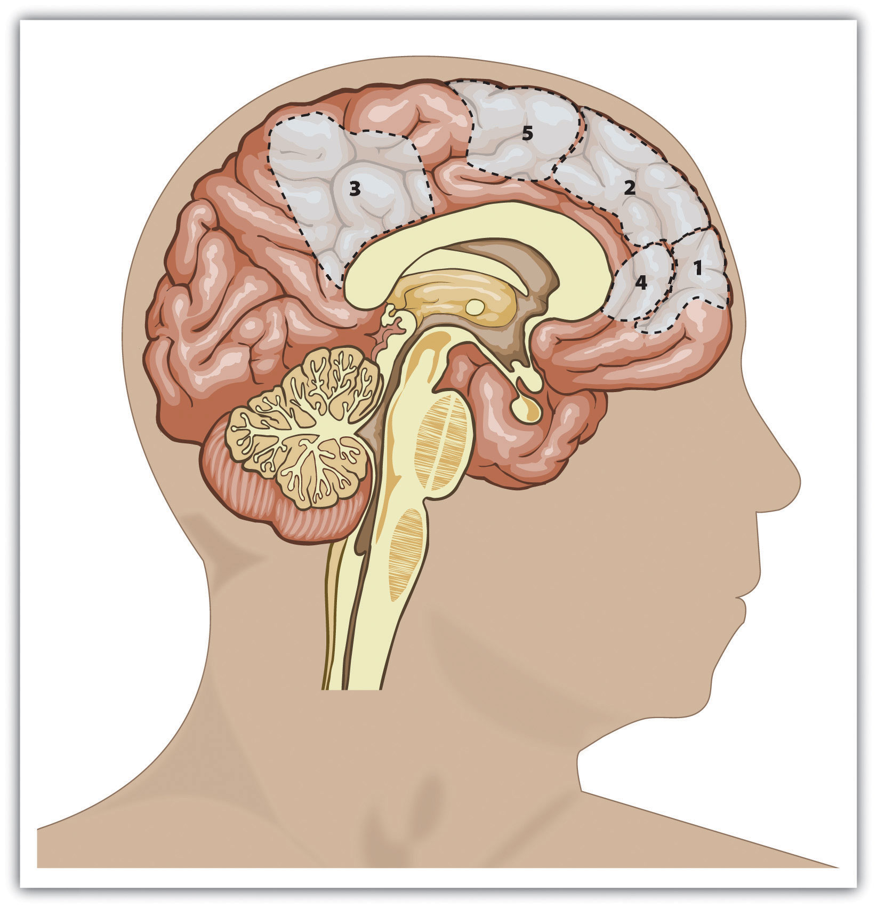
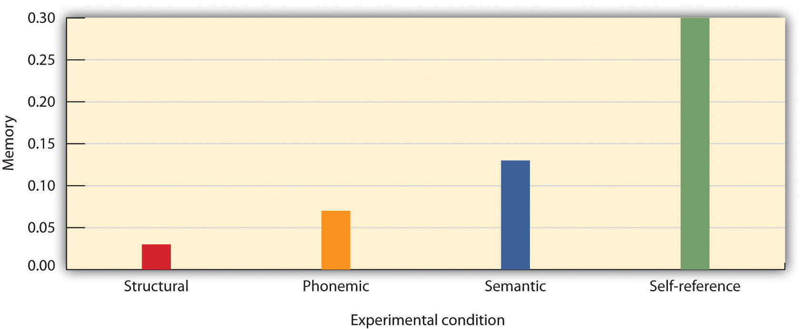

Some nonhuman animals, including chimpanzees, orangutans, and perhaps dolphins, have at least a primitive sense of self (Boysen & Himes, 1999).Boysen, S. T., & Himes, G. T. (1999). Current issues and emerging theories in animal cognition. Annual Review of Psychology, 50, 683–705. We know this because of some interesting experiments that have been done with animals. In one study (Gallup, 1970),Gallup, G. G., Jr. (1970). Chimpanzees: self-recognition. Science, 167, 86–87. researchers painted a red dot on the forehead of anesthetized chimpanzees and then placed the animals in a cage with a mirror. When the chimps woke up and looked in the mirror, they touched the dot on their faces, not the dot on the faces in the mirror. This action suggests that the chimps understood that they were looking at themselves and not at other animals, and thus we can assume that they are able to realize that they exist as individuals. Most other animals, including dogs, cats, and monkeys, never realize that it is themselves they see in a mirror.
Infants who have similar red dots painted on their foreheads recognize themselves in a mirror in the same way that the chimps do, and they do this by about 18 months of age (Asendorpf, Warkentin, & Baudonnière, 1996; Povinelli, Landau, & Perilloux, 1996).Asendorpf, J. B., Warkentin, V., & Baudonnière, P-M. (1996). Self-awareness and other-awareness. II: Mirror self-recognition, social contingency awareness, and synchronic imitation. Developmental Psychology, 32(2), 313–321; Povinelli, D. J., Landau, K. R., & Perilloux, H. K. (1996). Self-recognition in young children using delayed versus live feedback: Evidence of a developmental asynchrony. Child Development, 67(4), 1540–1554. The child’s knowledge about the self continues to develop as the child grows. By age 2, the infant becomes aware of his or her gender as a boy or a girl. At age 4, self-descriptions are likely to be based on physical features, such as one’s hair color, and by about age 6, the child is able to understand basic emotions and the concepts of traits, being able to make statements such as “I am a nice person” (Harter, 1998).Harter, S. (1998). The development of self-representations. In W. Damon & N. Eisenberg (Eds.), Handbook of child psychology: Social, emotional, & personality development (5th ed., Vol. 3, pp. 553–618). New York, NY: John Wiley & Sons.
By the time they are in grade school, children have learned that they are unique individuals, and they can think about and analyze their own behavior. They also begin to show awareness of the social situation—they understand that other people are looking at and judging them the same way that they are looking at and judging others (Doherty, 2009).Doherty, M. J. (2009). Theory of mind: How children understand others’ thoughts and feelings. New York, NY: Psychology Press.
Part of what is developing in children as they grow is the fundamental cognitive part of the self, known as the self-concept. The self-conceptA knowledge representation that contains knowledge about us, including our beliefs about our personality traits, physical characteristics, abilities, values, goals, and roles, as well as the knowledge that we exist as individuals. is a knowledge representation that contains knowledge about us, including our beliefs about our personality traits, physical characteristics, abilities, values, goals, and roles, as well as the knowledge that we exist as individuals. Throughout childhood and adolescence, the self-concept becomes more abstract and complex and is organized into a variety of different cognitive aspects, known as self-schemasOne of the many organized cognitive aspects of the self-concept.. Children have self-schemas about their progress in school, their appearance, their skills at sports and other activities, and many other aspects, and these self-schemas direct and inform their processing of self-relevant information (Harter, 1999).Harter, S. (1999). The construction of the self: A developmental perspective. New York, NY: Guilford Press.
By the time we are adults, our sense of self has grown dramatically. In addition to possessing a wide variety of self-schemas, we can analyze our thoughts, feelings, and behaviors, and we can see that other people may have different thoughts than we do. We become aware of our own mortality. We plan for the future and consider the potential outcomes of our actions. At times, having a sense of self may seem unpleasant—when we are not proud of our appearance, actions, or relationships with others, or when we think about and become afraid of the possibility of our own death. On the other hand, the ability to think about the self is very useful. Being aware of our past and able to speculate about the future is adaptive—it allows us to modify our behavior on the basis of our mistakes and to plan for future activities. When we do poorly on an exam, for instance, we may study harder for the next one or even consider changing our major if we continue to have problems in the major we have chosen.
One way to learn about a person’s self-concept and the many self-schemas that it contains is by using self-report measures. One of these is a deceptively simple fill-in-the-blank measure that has been used by many scientists to get a picture of the self-concept (Rees & Nicholson, 1994).Rees, A., & Nicholson, N. (1994). The Twenty Statements Test. In C. Cassell & G. Symon (Eds.), Qualitative methods in organizational research: A practical guide (pp. 37–54). Thousand Oaks, CA: Sage Publications. All of the 20 items in the measure are exactly the same, but the person is asked to fill in a different response for each statement. This self-report measure, known as the Twenty Statements Test, can reveal a lot about a person because it is designed to measure the most accessible—and thus the most important—parts of one’s self-concept. Try it for yourself, at least five times:
Although each person has a unique self-concept, we can identify some characteristics that are common across the responses given by different people on the measure. Physical characteristics are an important component of the self-concept, and they are mentioned by many people when they describe themselves. If you’ve been concerned lately that you’ve been gaining weight, you might write, “I am overweight.” If you think you’re particularly good looking (“I am attractive”), or if you think you’re too short (“I am too short”), those things might have been reflected in your responses. Our physical characteristics are important to our self-concept because we realize that other people use them to judge us. People often list the physical characteristics that make them different from others in either positive or negative ways (“I am blond,” “I am short”), in part because they understand that these characteristics are salient and thus likely to be used by others when judging them (McGuire, McGuire, Child, & Fujioka, 1978).McGuire, W. J., McGuire, C. V., Child, P., & Fujioka, T. (1978). Salience of ethnicity in the spontaneous self-concept as a function of one’s ethnic distinctiveness in the social enviornment. Journal of Personality and Social Psychology, 36, 511–520.
A second characteristic of the self-concept reflects our memberships in the social groups that we belong to and care about. Common responses in this regard include such ones as “I am an artist,” “I am Jewish,” and “I am a student at Augsburg College.” As we will see later in this chapter, our group memberships form an important part of the self-concept because they provide us with our social identity—the sense of our self that involves our memberships in social groups.
The remainder of the self-concept is normally made up of personality traits—the specific and stable personality characteristics that describe an individual (“I am friendly,” “I am shy,” “I am persistent”). These individual differences (the person part of the person-situation interaction) are important determinants of our behavior, and this aspect of the self-concept reflects this variation across people.
The self-concept is a rich and complex social representation. In addition to our thoughts about who we are right now, the self-concept includes thoughts about our past self—our experiences, accomplishments, and failures—and about our future self—our hopes, plans, goals, and possibilities (Oyserman, Bybee, Terry, & Hart-Johnson, 2004).Oyserman, D., Bybee, D., Terry, K., & Hart-Johnson, T. (2004). Possible selves as roadmaps. Journal of Research in Personality, 38(2), 130–149. The self-concept also includes thoughts about our relationships with others. You no doubt have thoughts about your family and close friends that have become part of yourself. Indeed, if you don’t see the people you really care about for a while, or if you should lose them in one way or another, you will naturally feel sad because you are in essence missing part of yourself.
Although every human being has a complex self-concept, there are nevertheless individual differences in self-complexityThe extent to which individuals have many different and relatively independent ways of thinking about themselves., the extent to which individuals have many different and relatively independent ways of thinking about themselves (Linville, 1987; Roccas & Brewer, 2002).Linville, P. W. (1987). Self-complexity as a cognitive buffer against stress-related illness and depression. Journal of Personality and Social Psychology, 52(4), 663–676; Roccas, S., & Brewer, M. (2002). Social identity complexity. Personality and Social Psychology Review, 6(2), 88–106. Some selves are more complex than others, and these individual differences can be important in determining psychological outcomes. Having a complex self means that we have a lot of different ways of thinking about ourselves. For example, imagine a woman whose self-concept contains the social identities of student, girlfriend, daughter, psychology major, and tennis player and who has encountered a wide variety of life experiences. Social psychologists would say that she has high self-complexity. On the other hand, a man who perceives himself solely as a student or solely as a member of the hockey team and who has had a relatively narrow range of life experiences would be said to have low self-complexity. For those with high self-complexity, the various self-aspects of the self are separate, such that the positive and negative thoughts about a particular self-aspect do not spill over into thoughts about other aspects.
Research has found that compared with people low in self-complexity, those higher in self-complexity experience more positive outcomes. People with more complex self-concepts have been found to have lower levels of stress and illness (Kalthoff & Neimeyer, 1993),Kalthoff, R. A., & Neimeyer, R. A. (1993). Self-complexity and psychological distress: A test of the buffering model. International Journal of Personal Construct Psychology, 6(4), 327–349. a greater tolerance for frustration (Gramzow, Sedikides, Panter, & Insko, 2000),Gramzow, R. H., Sedikides, C., Panter, A. T., & Insko, C. A. (2000). Aspects of self-regulation and self-structure as predictors of perceived emotional distress. Personality and Social Psychology Bulletin, 26, 188–205. and more positive and less negative reactions to events that they experience (Niedenthal, Setterlund, & Wherry, 1992).Niedenthal, P. M., Setterlund, M. B., & Wherry, M. B. (1992). Possible self-complexity and affective reactions to goal-relevant evaluation. Journal of Personality and Social Psychology, 63(1), 5–16.
The benefits of self-complexity occur because the various domains of the self help to buffer us against negative events and help us to enjoy the positive events that we experience. For people low in self-complexity, negative outcomes on one aspect of the self tend to have a big impact on their self-esteem. If the only thing that Maria cares about is getting into medical school, she may be devastated if she fails to make it. On the other hand, Marty, who is also passionate about medical school but who has a more complex self-concept, may be better able to adjust to such a blow by turning to other interests. People with high self-complexity can also take advantage of the positive outcomes that occur on any of the dimensions that are important to them.
Although having high self-complexity seems useful overall, it does not seem to help everyone equally and also does not seem to help us respond to all events equally (Rafaeli-Mor & Steinberg, 2002).Rafaeli-Mor, E., & Steinberg, J. (2002). Self-complexity and well-being: A review and research synthesis. Personality and Social Psychology Review, 6, 31–58. The benefits of self-complexity seem to be particularly strong on reactions to positive events. People with high self-complexity seem to react more positively to the good things that happen to them but not necessarily less negatively to the bad things. And the positive effects of self-complexity are stronger for people who have other positive aspects of the self as well. This buffering effect is stronger for people with high self-esteem, whose self-complexity involves positive rather than negative characteristics (Koch & Shepperd, 2004),Koch, E. J., & Shepperd, J. A. (2004). Is self-complexity linked to better coping? A review of the literature. Journal of Personality, 72(4), 727–760. and for people who feel that they have control over their outcomes (McConnell et al., 2005).McConnell, A. R., Renaud, J. M., Dean, K. K., Green, S. P., Lamoreaux, M. J., Hall, C. E.,…Rydel, R. J. (2005). Whose self is it anyway? Self-aspect control moderates the relation between self-complexity and well-being. Journal of Experimental Social Psychology, 41(1), 1–18. doi: 10.1016/j.jesp.2004.02.004
Because the self-concept is a schema, it can be studied using the methods that we would use to study any other schema. As we have seen, one approach is to use self-report—for instance, by asking people to list the things that come to mind when they think about themselves. Another approach is to use neuroimaging to directly study the self in the brain. As you can see in Figure 4.1, neuroimaging studies have shown that information about the self is stored in the prefrontal cortex, the same place that other information about people is stored (Barrios et al., 2008).Barrios, V., Kwan, V. S. Y., Ganis, G., Gorman, J., Romanowski, J., & Keenan, J. P. (2008). Elucidating the neural correlates of egoistic and moralistic self-enhancement. Consciousness and Cognition: An International Journal, 17(2), 451–456. This finding suggests that we store information about ourselves as people the same way we store information about others.
Figure 4.1
This figure shows the areas of the human brain that are known to be important in processing information about the self. They include primarily areas of the prefrontal cortex (areas 1, 2, 4, and 5). Data are from Lieberman (2010).Lieberman, M. D. (2010). Social cognitive neuroscience. In S. T. Fiske, D. T. Gilbert, & G. Lindzey (Eds.), Handbook of social psychology (5th ed., Vol. 1, pp. 143–193). Hoboken, NJ: John Wiley & Sons.
Still another approach to studying the self is to investigate how we attend to and remember things that relate to the self. Indeed, because the self-concept is the most important of all our schemas, it has extraordinary influence on our thoughts, feelings, and behavior. Have you ever been at a party where there was a lot of noise and bustle, and yet you were surprised to discover that you could easily hear your own name being mentioned in the background? Because our own name is such an important part of our self-concept, and because we value it highly, it is highly accessible. We are very alert for, and react quickly to, the mention of our own name.
Other research has found that information that is related to the self-schema is better remembered than information that is unrelated to it, and that information related to the self can also be processed very quickly (Lieberman, Jarcho, & Satpute, 2004).Lieberman, M. D., Jarcho, J. M., & Satpute, A. B. (2004). Evidence-based and intuition-based self-knowledge: An fMRI study. Journal of Personality and Social Psychology, 87(4), 421–435. In one classic study that demonstrated the importance of the self-schema, Rogers, Kuiper, and Kirker (1977)Rogers, T. B., Kuiper, N. A., & Kirker, W. S. (1977). Self-reference and the encoding of personal information. Journal of Personality and Social Psychology, 35(9), 677–688. conducted an experiment to assess how college students recalled information that they had learned under different processing conditions. All the participants were presented with the same list of 40 adjectives to process, but through the use of random assignment, the participants were given one of four different sets of instructions about how to process the adjectives.
Participants assigned to the structural task condition were asked to judge whether the word was printed in uppercase or lowercase letters. Participants in the phonemic task condition were asked whether or not the word rhymed with another given word. In the semantic task condition, the participants were asked if the word was a synonym of another word. And in the self-reference task condition, participants indicated whether or not the given adjective was or was not true of themselves. After completing the specified task, each participant was asked to recall as many adjectives as he or she could remember.
Figure 4.2 The Self-Reference Effect
The chart shows the proportion of adjectives that students were able to recall under each of four learning conditions. The same words were recalled significantly better when they were processed in relation to the self than when they were processed in other ways. Data from Rogers et al. (1977).Rogers, T. B., Kuiper, N. A., & Kirker, W. S. (1977). Self-reference and the encoding of personal information. Journal of Personality and Social Psychology, 35(9), 677–688.
Rogers and his colleagues hypothesized that different types of processing would have different effects on memory. As you can see in Figure 4.2 "The Self-Reference Effect", the students in the self-reference task condition recalled significantly more adjectives than did students in any other condition. The finding that information that is processed in relationship to the self is particularly well remembered, known as the self-reference effectThe ability to well remember information that relates to the self., is powerful evidence that the self-concept helps us organize and remember information. The next time you are studying for an exam, you might try relating the material to your own experiences—the self-reference effect suggests that doing so will help you better remember the information.
Like any other schema, the self-concept can vary in its current cognitive accessibility. Self-awarenessThe extent to which we are currently fixing our attention on our own self-concept. refers to the extent to which we are currently fixing our attention on our own self-concept. When the self-concept becomes highly accessible because of our concerns about being observed and potentially judged by others, we experience the publicly induced self-awareness known as self-consciousnessSelf-awareness as a result of our concerns about being observed and potentially judged by others. (Duval & Wicklund, 1972; Rochat, 2009).Duval, S., & Wicklund, R. A. (1972). A theory of objective self-awareness. New York, NY: Academic Press; Rochat, P. (2009). Others in mind: Social origins of self-consciousness. New York, NY: Cambridge University Press.
I am sure that you can remember times when your self-awareness was increased and you became self-conscious—for instance, when you were giving a class presentation and you were perhaps painfully aware that everyone was looking at you, or when you did something in public that embarrassed you. Emotions such as anxiety and embarrassment occur in large part because the self-concept becomes highly accessible, and they serve as a signal to monitor and perhaps change our behavior.
Not all aspects of our self-concepts are equally accessible at all times, and these long-term differences in the accessibility of the different self-schemas help create individual differences, for instance, in terms of our current concerns and interests. You may know some people for whom the physical appearance component of the self-concept is highly accessible. They check their hair every time they see a mirror, worry whether their clothes are making them look good, and do a lot of shopping—for themselves, of course. Other people are more focused on their social group memberships—they tend to think about things in terms of their role as Christians or as members of the tennis team. Think back for a moment to the opener of this chapter and consider Dancing Matt Harding. What do you think are his most highly accessible self-schemas?
In addition to variation in long-term accessibility, the self and its various components may also be made temporarily more accessible through priming. We become more self-aware when we are in front of a mirror, when a TV camera is focused on us, when we are speaking in front of an audience, or when we are listening to our own tape-recorded voice (Kernis & Grannemann, 1988).Kernis, M. H., & Grannemann, B. D. (1988). Private self-consciousness and perceptions of self-consistency. Personality and Individual Differences, 9(5), 897–902. When the knowledge contained in the self-schema becomes more accessible, it also becomes more likely to be used in information processing and more likely to influence our behavior.
Beaman, Klentz, Diener, and Svanum (1979)Beaman, A. L., Klentz, B., Diener, E., & Svanum, S. (1979). Self-awareness and transgression in children: Two field studies. Journal of Personality and Social Psychology, 37(10), 1835–1846. conducted a field experiment to see if self-awareness would influence children’s honesty. The researchers expected that most children viewed stealing as wrong but that they would be more likely to act on this belief when they were more self-aware. They conducted this experiment on Halloween evening in homes within the city of Seattle. When children who were trick-or-treating came to particular houses, they were greeted by one of the experimenters, shown a large bowl of candy, and were told to take only one piece each. The researchers unobtrusively watched each child to see how many pieces he or she actually took.
Behind the candy bowl in some of the houses was a large mirror. In the other houses, there was no mirror. Out of the 363 children who were observed in the study, 19% disobeyed instructions and took more than one piece of candy. However, the children who were in front of a mirror were significantly less likely to steal (14.4%) than were those who did not see a mirror (28.5%). These results suggest that the mirror activated the children’s self-awareness, which reminded them of their belief about the importance of being honest. Other research has shown that being self-aware has a powerful influence on other behaviors as well. For instance, people are more likely to stay on their diets, eat better foods, and act more morally overall when they are self-aware (Baumeister, Zell, & Tice, 2007; Heatherton, Polivy, Herman, & Baumeister, 1993).Baumeister, R. F., Zell, A. L., & Tice, D. M. (2007). How emotions facilitate and impair self-regulation. In J. J. Gross & J. J. E. Gross (Eds.), Handbook of emotion regulation (pp. 408–426). New York, NY: Guilford Press; Heatherton, T. F., Polivy, J., Herman, C. P., & Baumeister, R. F. (1993). Self-awareness, task failure, and disinhibition: How attentional focus affects eating. Journal of Personality, 61, 138–143. What this means is that when you are trying to stick to a diet, study harder, or engage in other difficult behaviors, you should try to focus on yourself and the importance of the goals you have set.
Social psychologists are interested in studying self-awareness because it has such an important influence on behavior. People lose their self-awareness and become more likely to violate acceptable social norms when, for example, they put on a Halloween mask or engage in other behaviors that hide their identities. The members of the militant White supremacist organization the Ku Klux Klan wear white robes and hats when they meet and when they engage in their racist behavior. And when people are in large crowds, such as in a mass demonstration or a riot, they may become so much a part of the group that they lose their individual self-awareness and experience deindividuationThe loss of self-awareness and individual accountability in groups.—the loss of self-awareness and individual accountability in groups (Festinger, Pepitone, & Newcomb, 1952; Zimbardo, 1969).Festinger, L., Pepitone, A., & Newcomb, B. (1952). Some consequences of deindividuation in a group. Journal of Abnormal and Social Psychology, 47, 382–389; Zimbardo, P. (1969). The human choice: Individuation, reason and order versus deindividuation impulse and chaos. In W. J. Arnold & D. Levine (Eds.), Nebraska Symposium of Motivation (Vol. 17). Lincoln, NE: University of Nebraska Press.
Two particular types of individual differences in self-awareness have been found to be important, and they relate to self-concern and other-concern, respectively (Fenigstein, Scheier, & Buss, 1975; Lalwani, Shrum, & Chiu, 2009).Fenigstein, A., Scheier, M. F., & Buss, A. H. (1975). Public and private self-consciousness: Assessment and theory. Journal of Consulting and Clinical Psychology, 43, 522–527; Lalwani, A. K., Shrum, L. J., & Chiu, C.-Y. (2009). Motivated response styles: The role of cultural values, regulatory focus, and self-consciousness in socially desirable responding. Journal of Personality and Social Psychology, 96, 870–882. Private self-consciousnessThe tendency to introspect about our inner thoughts and feelings. refers to the tendency to introspect about our inner thoughts and feelings. People who are high in private self-consciousness tend to think about themselves a lot and agree with statements such as “I’m always trying to figure myself out” and “I am generally attentive to my inner feelings.” People who are high on private self-consciousness are likely to base their behavior on their own inner beliefs and values—they let their inner thoughts and feelings guide their actions—and they may be particularly likely to strive to succeed on dimensions that allow them to demonstrate their own personal accomplishments (Lalwani, Shrum & Chiu, 2009).Lalwani, A. K., Shrum, L. J., & Chiu, C-Y. (2009). Motivated response styles: The role of cultural values, regulatory focus, and self-consciousness in socially desirable responding. Journal of Personality and Social Psychology, 96, 870–882.
Public self-consciousnessThe tendency to focus on our outer public image and to be particularly aware of the extent to which we are meeting the standards set by others., in contrast, refers to the tendency to focus on our outer public image and to be particularly aware of the extent to which we are meeting the standards set by others. Those high in public self-consciousness agree with statements such as “I’m concerned about what other people think of me,” “Before I leave my house, I check how I look,” and “I care a lot about how I present myself to others.” These are the people who check their hair in a mirror they pass and spend a lot of time getting ready in the morning; they are more likely to let the opinions of others (rather than their own opinions) guide their behaviors and are particularly concerned with making good impressions on others.
Research has found cultural differences in public self-consciousness, such that people from East Asian collectivistic cultures have higher public self-consciousness than do people from Western individualistic cultures. Steve Heine and his colleagues (Heine, Takemoto, Moskalenko, Lasaleta, & Henrich, 2008)Heine, S. J., Takemoto, T., Moskalenko, S., Lasaleta, J., & Henrich, J. (2008). Mirrors in the head: Cultural variation in objective self-awareness. Personality and Social Psychology Bulletin, 34(7), 879–887. found that when college students from Canada (a Western culture) completed questionnaires in front of a large mirror, they subsequently became more self-critical and were less likely to cheat (much like the trick-or-treaters we discussed earlier) than were Canadian students who were not in front of a mirror. However, the presence of the mirror had no effect on college students from Japan. This person-situation interaction is consistent with the idea that people from East Asian cultures are normally already high in public self-consciousness, in comparison with people from Western cultures, and thus manipulations designed to increase public self-consciousness are less influential for them.
Although the self-concept is the most important of all our schemas, and although people (particularly those high in self-consciousness) are aware of their self and how they are seen by others, this does not mean that people are always thinking about themselves. In fact, people do not generally focus on their self-concept any more than they focus on the other things and other people in their environments (Csikszentmihalyi & Figurski, 1982).Csikszentmihalyi, M., & Figurski, T. J. (1982). Self-awareness and aversive experience in everyday life. Journal of Personality, 50(1), 15–28.
On the other hand, self-awareness is more powerful for the person experiencing it than it is for others who are looking on, and the fact that self-concept is so highly accessible frequently leads people to overestimate the extent to which other people are focusing on them (Gilovich & Savitsky, 1999).Gilovich, T., & Savitsky, K. (1999). The spotlight effect and the illusion of transparency: Egocentric assessments of how we are seen by others. Current Directions in Psychological Science, 8(6), 165–168. Although you may be highly self-conscious about of something you’ve done in a particular situation, that does not mean that others are necessarily paying all that much attention to you. Research by Thomas Gilovich and his colleagues (Gilovich, Medvec, & Savitsky, 2000)Gilovich, T., Medvec, V. H., & Savitsky, K. (2000). The spotlight effect in social judgment: An egocentric bias in estimates of the salience of one’s own actions and appearance. Journal of Personality and Social Psychology, 78(2), 211–222. found that people who were interacting with others thought that other people were paying much more attention to them than those other people reported actually doing.
Teenagers are particularly likely to be highly self-conscious, often believing that others are constantly watching them (Goossens, Beyers, Emmen, & van Aken, 2002).Goossens, L., Beyers, W., Emmen, M., & van Aken, M. (2002). The imaginary audience and personal fable: Factor analyses and concurrent validity of the “new look” measures. Journal of Research on Adolescence, 12(2), 193–215. Because teens think so much about themselves, they are particularly likely to believe that others must be thinking about them, too (Rycek, Stuhr, McDermott, Benker, & Swartz, 1998).Rycek, R. F., Stuhr, S. L., McDermott, J., Benker, J., & Swartz, M. D. (1998). Adolescent egocentrism and cognitive functioning during late adolescence. Adolescence, 33, 746–750. It is no wonder that everything a teen’s parents do suddenly feels embarrassing to them when they are in public.
People also often mistakenly believe that their internal states show to others more than they really do. Gilovich, Savitsky, and Medvec (1998)Gilovich, T., Savitsky, K., & Medvec, V. H. (1998). The illusion of transparency: Biased assessments of others’ ability to read one’s emotional states. Journal of Personality and Social Psychology, 75(2), 332–346. asked groups of five students to work together on a “lie detection” task. One at a time, each student stood up in front of the others and answered a question that the researcher had written on a card (e.g., “I have met David Letterman”). On each round, one person’s card indicated that they were to give a false answer, whereas the other four were told to tell the truth.
Figure 4.3 The Illusion of Transparency

After each round, the students who had not been asked to lie indicated which of the students they thought had actually lied in that round, and the liar was asked to estimate the number of other students who would correctly guess who had been the liar. As you can see in Figure 4.3 "The Illusion of Transparency", the liars overestimated the detectability of their lies: On average, they predicted that over 44% of their fellow players had known that they were the liar, but in fact only about 25% were able to accurately identify them. Gilovitch and his colleagues called this effect the “illusion of transparency.”